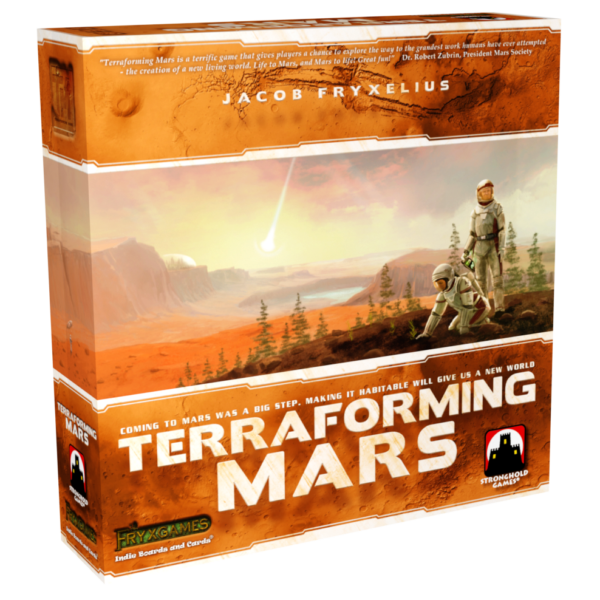

Terraforming Mars
Jacob Fryxelius · 2016 · 1-5 players · 90-120 minutes

Expansion Reviews


Review Scope And Play Context
This review evaluates Terraforming Mars with all official expansions and all official promotional material. The base game alone is not the same evaluated object. For online play, I recommend tm.jaing.me, where most of my online games have taken place. In my experience, it provides all official expansions for free, along with complete opening drafts, optional Breakthrough corporation balance, double-corporation play, and some low-priced fan-balance content. Those fan variants are recommendations rather than scored official content. Access from outside China has recently been unreliable; BGA is convenient, but its available modules do not represent the complete version evaluated here.
I have played roughly 500 games on that site, which gives me a substantial practical basis for discussing the game's systems, values, and long-term behavior. My friends and I often leave a game running in the background. At this level of familiarity, Terraforming Mars no longer requires us to set aside deliberate thinking time: whenever someone has time and notices that it is their turn, they take two actions and return to whatever else they were doing. This says more about accumulated fluency than an absence of depth; many calculations that once required conscious effort have become recognition and habit.
Replayability matters greatly to me, and Terraforming Mars's exceptional replayability is one of the main reasons I love it. That preference legitimately shapes the impression score. In the dimension breakdown, however, it does not erase the game's visible weaknesses in balance, aesthetics, interaction, or flow.
Verdict
Terraforming Mars is engine building in an unusually pure and extreme form. Its cards are not forced into a short cycle or a fixed number of turns. Players can retain projects, accumulate production, and keep extending an economy until they decide that development should become points or that the shared terraforming should finally end the game.
It is not a design without faults. Weak resources, uneven corporations, and scattered card outliers are easy to find. Its best systems, however, reach beyond the ordinary ceiling: the numerical model, the conflict over game length, and the architecture's ability to absorb years of new content are exceptional enough that those flaws reduce an extraordinary design rather than turn it into an ordinary one.
My impression score is therefore 99, while the dimension-weighted result is 93.9. That gap reflects this game's particular combination of strengths and weaknesses: extraordinary engine architecture and replayability coexist with visible costs in balance, aesthetics, interaction, and novice flow.
Mechanics: A Long-Horizon Engine
Card Language And Time Structure
The card system begins with a clear grammar. Green Automated projects resolve their immediate effects and remain as tags; blue Active projects create persistent effects or repeatable actions; red Events happen once and are then turned face down. Cost, tags, global prerequisites, tag prerequisites, and rewards place every card inside the same readable economic language.
What gives that language its force is time. A generation does not impose a small fixed action allowance, and the game has no strict hand limit that repeatedly forces players to discard long-term possibilities. A player may retain a project for many generations, wait for a discount, build the production needed to support it, and then convert the entire chain late in the game. This is why Terraforming Mars tests long-term planning more directly than short-cycle conversion efficiency.
In theory, a project with no long-term return can be delayed until the final generation because a discount may still appear later. That is not an absolute answer. Playing earlier may cycle into another draw, create a needed tag, or secure a Milestone. Milestones are therefore not an isolated scoring ornament; they are one of the mechanisms that prevent long-term planners from postponing every conversion without further thought.
Anti-Gravity Technology is a precise example. Buying it early costs three money, and if it is eventually played its strength can repay the investment. If it never becomes playable, selling the patent returns one money, so the nominal loss is only two. Even that calculation needs a time-value caveat: three money near the opening and one money near the ending cannot be treated as a context-free subtraction. A simple decision to keep one card therefore contains probability, timing, liquidity, and future engine value at once.
Resources And Numerical Models
Money, steel, and titanium divide their work clearly and intuitively. Steel and titanium are more valuable per unit, but their tag restrictions make them less flexible than money. The production model is not a flat conversion of the printed spending rates: card analysis produces approximate values of 4.5 money for one money production, 7 for one steel production, and 10 for one titanium production. Those expectations also match the experience at the table. Restricted payment and careful valuation reinforce each other.
Plants, energy, and heat are less even, but more revealing. Plants are powerful because greeneries are powerful, yet eight plants are required before the resource changes state. Players can assemble those eight resources through production, cards, and other gains, so this is primarily a phase change in stored resources. The threshold creates timing and exposes accumulated plants to interaction.
Energy is awkward in the base game: it is priced above heat because it satisfies many city requirements and supports valuable cards such as AI Central, but its default conversion ends in a weak resource. Colonies adds a new three-energy trade threshold. Because energy normally converts into heat during production instead of remaining stored across generations, reaching that threshold depends mainly on raising energy production itself. The phase change therefore moves from accumulated resources into production capacity, while remaining connected to the original energy-to-heat cycle. With a strong colony available, three energy production can approach nine money production; requiring three energy and offering cards that reduce the trade cost keep more than one route into the model. This added layer makes energy more useful and the original relationship more dimensional.
Heat remains the clearest weak point. Saving 35 money for Soletta can take three or four generations before the production raises temperature three times. Deimos Down costs 31, raises temperature three times immediately, provides four steel, and removes enough plants to erase an entire greenery. Heat production also asks for future generations to repay itself, which conflicts with a terraforming strategy that wants the game to end quickly. The comparison is severe, but useful: the model is excellent precisely because most values can be discussed this concretely, and its failures are visible rather than vague.
The Shared Ending And Global Parameters
TR is both income and points, which allows fast terraforming to finance more terraforming. That creates an invisible conflict with pure development. Engine players buy production more cheaply than early TR and want enough generations to convert the resulting wealth into points. Terraformers prefer a shorter axis: immediate conversion, compounding TR income, and an earlier ending.
This conflict comes from a particularly effective end condition. The game does not stop after a fixed number of rounds or when one player reaches a score. It ends when the table completes the apparently cooperative task of raising oxygen and temperature and placing every ocean. The two approaches remain broadly balanced without becoming absolute categories, leaving room to terraform, delay, or change position as the final generations develop. Their contest is usually clearest in the last two generations.
The three parameters also share prerequisites and threshold rewards. Strong plant projects may require enough oceans or temperature; strong ocean projects may require temperature. More importantly, an oxygen threshold raises temperature and a temperature threshold places an ocean. These rewards are rich enough that even a development player who wants another generation may use an otherwise inefficient Standard Project to take one first. A track reward can briefly outweigh a player's normal position on the ending itself.
Map Positioning
The two-money ocean adjacency payment is mostly an extra. The real map contest comes from cities and greeneries. Cities are expensive and have enormous scoring variance: a bad city receives nothing, while the geometric ceiling is six points, even if that ceiling is effectively impossible in a real session. Because cities cannot be adjacent, a placement also denies positions to other players.
Greeneries create a different restriction. When possible, they must be placed beside the player's existing tiles. A poorly planned route can therefore force a greenery beside an opponent's city and give that opponent points. The map rewards planning without becoming a separate spatial game detached from the economy.
Highly profitable spaces are often surrounded by areas with few rewards, limiting continued development. A three-card placement reward creates another productive tension: an engine player who takes it with greenery also advances oxygen and the ending, while a terraformer must decide whether the cards and denial are worth constraining a future tile route. Milestones and Awards also give otherwise barren regions a reason to matter. A space's real value comes from the relationship among its reward, the surrounding terrain, future routes, and the shared clock.
Corporations: Bold And Uneven
Corporations have enormous influence and are often strongly tied to an approach. This is a bold double-edged design. It opens an entire new axis of replayability, but powers this defining are almost inevitably difficult to balance. Most strong-versus-weak differences come from the strategic package a corporation creates rather than only its raw starting value. Point Luna is a successful package: the economy already associated with Earth cards reinforces its Earth-tag card draw. Aphrodite's incentives fight each other: Venus development usually belongs to an engine player who wants to delay the ending, while its plant production eventually creates greeneries and advances oxygen.
Some problems are numerical rather than conceptual. Vitor is very difficult to make unprofitable; Stormcraft Incorporated is difficult to make profitable under almost any model. Even a visibly weak corporation can still invite one attempt, because an unusual identity makes a player want to prove that a better idea can rescue it. That unevenness hurts balance, while the corporations' distinctive identities simultaneously broaden replayability.
The official opening does not draft starting corporations and projects, but I strongly recommend a complete opening draft for experienced groups. On tm.jaing.me, a common setup reveals four corporations and four Prelude cards, drafts two five-card project batches in opposite directions, and then drafts the Preludes and corporations before anyone buys a starting hand. It sounds long for a beginner; veterans may spend more time expressing shock and disdain at their options than making the decisions. The site also offers Breakthrough versions for weak corporations and a double-corporation mode. Those are useful variants, not part of the scored official game.
Milestones And Awards
Milestones offer an unusually favorable return, but reaching one often requires inefficient investment. Players must judge not only their own route, but whether opponents will commit and which Milestone each is pursuing. Investing and then losing the race is the real disaster: the player pays the strategic cost without receiving the reward.
Awards take that contest one step deeper by adding timing. Funding early is cheaper but risky; the third Award costs 20 money and is barely attractive on price alone. A Helion player may appear untouchable in heat, only for an opponent to play Optimal Aerobraking in the final generation and pass them. A money-production leader may suddenly lose to Toll Station pulled from an opponent's hand (that card really does have a design problem). Hidden information, escalating prices, delayed conversion, and the possibility of buying points for someone else remain active at the same time.
How The Expansions Enter The System
Prelude accelerates the opening and adds setup variation. Venus Next adds a distinct TR route, new card models, and new synergies, while World Government Terraforming both keeps the game moving and intensifies competition for parameter rewards. Colonies integrates more tightly as a new action inside the existing economy. Its three-energy trade threshold places the phase change mainly on energy production and connects trade to the existing energy-to-heat cycle.
Turmoil is more controversial because it partly changes the game's audience. Parliament creates a major public contest and increases political interaction, while recurring TR loss lengthens the session. The political system is coherent and well integrated, but its repeated administration, added time, and weak two-player scaling often outweigh the decisions it adds. It remains a positive option for the right three- or four-player group, not a default module for every table. Prelude 2 continues the role of Prelude, while additional maps and similar content primarily add variation. Taken together, these modules show that almost all of them can enter the same engine without replacing its foundation.
Mechanics therefore receives 100/100 with a 25% weight. The core engine is complete enough to deserve a full score, and its proven extensibility is an important part of that judgment. This is not a claim that every module integrates equally well: Venus can feel attached above the base system, while Turmoil shifts the center of play more substantially. Those differences are why Mechanics does not receive an additional bonus beyond 100. Mechanics still carries the largest weight because every other experience in Terraforming Mars depends on this engine remaining coherent.
Depth, Learning Cost, And Replayability
Terraforming Mars has a clear mastery bottleneck: its numerical model. Before understanding that model, a player may play many sessions and still judge a card mainly by feeling. Once the conversions among production, resources, tags, timing, and generations become legible, even a relatively inexperienced player can begin calculating whether a card is above or below its model. Many decisions become much clearer very quickly.
Discovering the model without help is difficult, so the independent path to mastery is substantial. The same model also limits the ultimate ceiling: once it is understood, card evaluation changes from accumulated intuition into a relatively explicit calculation instead of opening endless new layers. Complexity, however, is very low for what the game contains. The basic rules are simple, the card grammar is clear, and players with card-game experience usually learn it well. The large deck adds content to recognize, not an equally large body of rules. Depth/Complex is therefore 91/100 with a 10% weight: strong depth delivered at unusually low structural cost, but not a bottomless mastery ceiling.
Replayability comes from content that already exists, not merely from hypothetical future potential. Official expansions, promotional cards, corporations, maps, Milestones, Awards, and the enormous project deck keep changing both setup and available development routes. Even after the numerical model becomes familiar, those elements continue to alter viable engines, timing, and the relationship between development and terraforming. The architecture has not merely promised room for future variety; the released content already puts that variety on the table. Replayability reaches 115/100. I regard the complete official system as a ceiling case for replayability: the bonus reflects variation already present at the table, not future cards counted in advance.
Its weight is a more restrained 12%. Many players do return to Terraforming Mars for years, but many others sample this large system only briefly, so replayability still should not dominate every judgment. It nevertheless carries slightly more weight here than in a game built from more parallel mechanisms: much of Terraforming Mars's lasting value is concentrated in how cards, corporations, maps, and expansion content keep recombining the same engine. At 12%, replayability remains important without asking every reader to value repeated exploration as highly as I do.
Interactivity
Most Terraforming Mars interaction is real but fine-grained. Players contest map positions, threshold rewards, cards in a draft, Milestones, Awards, and the timing of the shared ending. Direct attack cards add sharper moments by removing resources or production. Those attacks are a positive source of interaction rather than a flaw, but they do not change the fact that players spend much of the session operating their own engines.
Turmoil provides a useful adjustment. Groups that prefer stronger public interaction can add parliamentary control and political timing; groups that prefer private development can leave it out. This does not make every preference agree, but it gives different tables a meaningful option inside the official system. It also cannot turn the whole design into a near-top interaction game: most decisions and most table time still center on each player's own engine, and many shared effects remain fine-grained. Interactivity therefore receives 88/100 with an 8% weight. Its interaction is generally well handled, but neither its quantity nor its usual impact matches interaction-centered designs.
Balance And Flow
The numerical model is one of the game's greatest achievements. Most cards remain inside a stable range, and years of expansions and promotional cards have continued to use the same tags, costs, resources, and prerequisites without collapsing it. That extensibility and maintainability are strong evidence of balance, not just quantity.
The uneven corporations described earlier are part of a broader design tradeoff. To create more routes and sustain exceptional replayability, Terraforming Mars repeatedly accepts bold, high-variance cards and powers. Those designs invite experimentation and give weak or unusual packages a reason to be tried, but the added variety comes with a real loss of numerical consistency.
Underground Detonations remains a concrete example of a project far below the normal model; corporation balance is poor, and the original roles of energy and heat are uneven. A complete opening draft helps protect experienced games, but it is an added variant rather than an official first-generation safeguard. Balance therefore receives 86/100. Its weight remains substantial at 13% because a pure engine builder asks players to trust its conversions for an entire long session. Route variation is slightly more central to this game's identity than perfect local tuning, but the remaining imbalance still affects the engine throughout that session.
Flow changes dramatically with familiarity. New players need time to read, but the cards are unusually legible: icons, costs, tags, and values communicate so much that experienced players often identify a card without reading its text. A veteran encountering a new expansion can usually read a card once and already estimate its level. The extra phases and late engine execution of the complete game have little effect after the table is familiar with them.
A session can therefore be long without feeling stalled. Familiar play does not represent the whole audience, however: new players still stop to read, compare, and reconsider cards, and too many expansions make those interruptions more frequent even when the iconography itself is clear. Turmoil is particularly demanding as a first experience. Terraforming Mars is smooth once familiar, but it is not a top-tier Flow design across its whole audience. Flow therefore receives 90/100 with a 9% weight. New players should learn with fewer modules; the full configuration is a fluent destination, not the correct starting point.
Theme, Aesthetics, And Readability
Terraforming is not a pasted-on premise. Global parameters, environmental prerequisites, corporations, scientific tags, and the shared ending all describe the same transformation of Mars. The space setting is appealing and supports the mechanisms well. It is not especially intimate or immediately friendly, but it also does not create the kind of severity that scares players away before learning. Theme receives 89/100 with an 8% weight: the integration is strong and the setting broadly works, but neither its approachability nor its thematic effect is quite exceptional.
The art is more uneven. Card illustrations range widely in style and quality and rarely become a reason to admire the game by themselves. The interface is much better than the illustrations: cost, tags, prerequisites, points, and effect icons are placed consistently enough that experienced players often need to expose only a small part of a card to know what it is. That clarity is a substantial usability achievement. Aesthetics receives 82/100 with a 10% weight. Players spend almost the entire session looking at, reading, and arranging these cards, so the uneven illustrations cannot be treated as a peripheral weakness merely because the interface remains functional. The presentation continuously occupies the main field of play.
Innovation And Integration
Terraforming Mars is not best described as a highly innovative game. Cards, resources, drafting, variable powers, hex placement, and alternating actions all had clear precedents. Its distinctiveness does not depend on claiming those foundations as original, but on what it builds by connecting them.
Its distinctive contribution is the integrated card language and the loop connecting private engines to shared parameters, TR, environmental prerequisites, and a player-controlled ending. The result has a strong identity and supports the whole game, but much of its excellence still comes from modelling, integration, and extensibility rather than a large number of unprecedented ideas. Innovation is therefore 87/100 with a 5% weight: clearly above ordinary, but not one of the game's defining strengths.
Recommendation, Entry Point, And Commercial Model
Terraforming Mars is an essential recommendation for players who enjoy card-driven engines, long planning horizons, and the pleasure of watching an economy become dramatically more capable. Card-game experience lowers the learning cost substantially. Players who need short sessions or constant direct confrontation may find the base rhythm too private, although Turmoil offers a stronger-interaction option.
New players should not begin with the entire official system. Learn the card language and core economy with fewer modules, then add expansions as the table becomes comfortable; Turmoil in particular should come later. The modules integrate well enough to form a coherent complete version, but that version is a destination for a familiar group, not a first-night setup.
Price does not enter the score, but Terraforming Mars's commercial model still deserves criticism. Promo content in particular is priced far too high for the amount included, making it genuinely difficult to keep supporting official releases even for players who would prefer to keep buying official products.
Few engine builders combine such a transparent model, such a productive conflict over time, and such a durable capacity for growth. Terraforming Mars has many imperfections worth describing honestly, but its strengths remain larger.